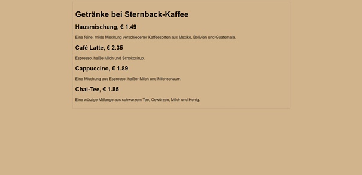

Vorlesung 2 – Sitzung vom 17.10.2022
In der zweiten Vorlesung haben wir erstmal erklärt bekommen wie ein Webserver und das Internet generell funktioniert.
Was ist eine URL
Wenn ein Benutzer eine Website besuchen will, braucht er die URL
dieser Website, die in die Suchleiste des Browsers eingetippt wird.
URL steht für "Uniform Resource Locator". Die URL bezieht sich auf
eine einzigartige Adresse, die eine Datei auf einem Server angibt.
Eine URL ist also das, was wir in unseren Browser eingeben oder was
sich hinter einem Link verbirgt. Mit der URL ist es dem Computer
möglich, Ressourcen über ein Netzwerkprotokoll zu identifizieren und
gezielt auf sie zuzugreifen. Meistens läuft die Verbindung über viele
Verbindungsrechner. Bei der Anfrage wird dem anfragenden PC eine
Nummer zugeordnet, die den Computer eindeutig identifiziert: Die
IP-Adresse. Eine IP-Adresse ist für den Computer, wie die Postadresse
für den Menschen. Nun wird vom Browser ein s.g. HTTP-Request an das
Domain-Name-System (DNS) gesendet. Der DNS Server wandelt nun die URL
in die dazugehörige IP Adresse um. Mit der IP-Adresse kann der
Computer eine Verbindung mit dem gesuchten Webserver herstellen, der
die Website als HTML-Datei (Hypertext Markup Language) gespeichert
hat. Sobald ein Webserver eine solche Anfrage bekommt, sendet er die
angefragte Website mit allen Bildern, Videos und sonstigen Dateien
zurück.
HTML
Die Hypertext Markup Language (kurz HTML) ist eine einheitliche textbasierte Auszeichnungssprache. Sie macht Browsern eine Interpretation und Anzeige sowie die Verknüpfung von Webseiten möglich. Die Auszeichnungselemente werden „Tags“ genannt. Im aktuellen Standard nutzt man XHTML und HTML5 um insbesondere Suchmaschinenoptimierte und User-orientierte Webseiten zu erstellen. Ein Beispiel hierfür ist das so genannte Responsive Design, das sich auf das Darstellen auf verschieden großen Geräten bezieht.
| Tags | Bedeutung/Ausgabe |
<html> |
Erster Tag im Code; gibt an, dass nun HTML Code folgt |
<title> |
Titel der Seite |
<meta> |
Metadaten |
<script> |
Bindet Code in Skriptsprachen ein |
<body> |
Sichtbarer Teil der Website |
<p> |
Textabsatz |
<h1>,…,<h6> |
Überschriften |
<a> |
Verlinkung zu einer anderen Seite (Hyperlink) |
<img> |
Einfügen eines Bildes |
<b> |
Fettschrift |
Unsere erste kleine Website
Nach den ersten Grundlagen einer HTML-Website haben wir direkt angefangen selber eine einfache Website zu entwickeln. Sie sollte anhand der Zeichnung des Geschäftsführers des Unternehmens „Sternback-Kaffe“ gestaltet werden.
Zur Erstellung einer .html Datei benötigt man einen so genannten
Editor. Ich benutze der Gewohnheit wegen Visual Studio Code.
Dort wird der Quelltext für die Website geschrieben.
<body>
<h1>Getränke bei Sternback-Kaffee</h1>
<h2>Hausmischung, € 1.49</h2>
<p>
Eine feine, milde Mischung verschiedener Kaffeesorten aus Mexiko, Bolivien und Guatemala.
</p>
<h2>Café Latte, € 2.35</h2>
<p>Espresso, heiße Milch und Schokosirup.</p>
<h2>Cappuccino, € 1.89</h2>
<p>Eine Mischung aus Espresso, heißer Milch und Milchschaum.</p>
<h2>Chai-Tee, € 1.85</h2>
<p>Eine würzige Mélange aus schwarzem Tee, Gewürzen, Milch und Honig.</p>
</body>
Im Browser wird die Website so dargestellt.
Hier erkennt man einen deutlichen Unterschied zur Darstellung im Editor. Die Schriftart hat sich verändert, der Hintergrund hat eine andere Farbe und es ist ein Rahmen, um den Text zu erkennen.
Cascading Style Sheets
Bis jetzt haben wir uns nur mit der Struktur einer Website beschäftigt, die durch HTML festgelegt wird. Das Aussehen der Webseite wird durch eine andere Sprache verändert. Cascading Style Sheets (CSS, zu Deutsch: gestufte Stilvorlagen) ist ebenfalls für die Webentwicklung entwickelt worden. Mit CSS können Entwickler zum Beispiel Schriftarten, Farben, Linien, Höhen und Breiten auf einer Webseite verändern. Es gibt verschiedene Arten CSS in eine HTML Datei einzubinden.
-
Die direkte Formatierung mithilfe des
style=““-Attributs. Dies ist die unsauberste Möglichkeit CSS in HTML einzubinden und sollte vermieden werden, da dadurch der Quelltext sehr unübersichtlich und schwer veränderbar wird. -
Die zentrale Formatierung gilt für das gesamte Dokument. Für diese
Art gibt es den
<style>-Tag. Dazwischen kann das gesamte für die Website benutze CSS geschrieben werden. -
Die externe Formatierung: Die Formatierungen werden in eine Datei
mit der Endung .css ausgelagert welche dann im HTML durch
<link rel="stylesheet" type="text/css" href="dateiname.css">im<head>eingebunden wird. Dies ist die optimalste Variante, da so die Designangaben für mehrere Dateien genutzt werden können.
In einer CSS-Datei wird nun also das Aussehen festgelegt. Die Designeigenschaften sind als Schlüssel-Werte-Paare definiert. Sie lassen sich über die HTML-Tags, Klassennamen oder ID’s ansprechen. Die oben gezeigte Sternback-Website wurde über den passenden HTML-Tag formatiert.
| Befehl | Auswirkung |
background-color |
Verändert die Hintergrundfarbe |
margin |
Außenabstand eines Elements |
border |
Rahmen eines Elements |
padding |
Innenabstand eines Elements |
font-family |
Gibt die Schriftart an |
Um nun von dem kurzen HTML und CSS Einschub wieder wegzukommen, haben
wir mit JavsScript weitergemacht. Nach der Einführung der
alert()-Funktion in der ersten Vorlesung, haben wir nun
die Funktionsweise des Document Obejct Models (DOM) kennengelernt. Das
Document Object Model ist ein W3C-Standard.
Document Object Model
Das Document Object Model (kurz: DOM) ist eine Schnittstelle, die geschaffen wurde, um HTML- oder XML-Dokumente dynamisch verändern und an verschiedene Browserumgebungen anpassen zu können. Grundsätzlich ist sie allerdings nicht auf HTML oder CSS beschränkt, sondern kann für die Definition von Objekten, Eigenschaften und Methoden in unterschiedlichen Programmiersprachen verwendet werden. Das Document Object Model ist für jede Sprache einsetzbar, die auf XML basiert und dementsprechend in einer hierarchischen Baumstruktur darstellbar ist.

Nachdem wir nun wissen wie das DOM aufgebaut ist können wir auch
verstehen, wie JavaScript mithilfe des DOM diesen verändern kann und
direkt auf einzelne Bestandteile von ihm zugreifen kann. So haben wir
beispielsweise unsere erste manipulative Funktion kennengelernt. Mit
.innerHTML kann man auf sich den Inhalt eines HTML
Elements zurückgeben lassen oder verändern.
//Ermittelt den HTML-Inhalt eines Elements mit id="myP":
let html = document.getElementById("myP").innerHTML;
//Change the HTML content of an element with id="demo":
document.getElementById("demo").innerHTML = "I have changed!";
Außerdem haben wir eine zu alert() ähnliche Funktion
kennengelernt. Die prompt()-Funktion zeigt ein Dialogfeld
an, in dem der Benutzer zur Eingabe aufgefordert wird. Sie gibt den
Eingabewert zurück, wenn der Benutzer auf "OK" klickt, andernfalls
gibt sie null zurück. Man sollte diese Funktion nicht zu häufig
verwenden, denn sie verhindert, dass der Benutzer auf andere Teile der
Seite zugreifen kann, bis das Feld geschlossen wird. Beispielsweise
wir hier die Eingabe des Benutzers auf die Anzeige „Bitte gib deinen
Name ein“ in der Variable person gespeichert.
let person = prompt("Bitte gibt deinen Namen ein");
Das sieht auf der Website so aus:
Das kann noch mit
let alter = prompt(„Wie alt sind Sie?“) ergänzt werden.
Kombiniert kann das ganze so zusammengefügt werden:
alert("Herzlich Willkommen " + person + " auf meiner Website! Sie sind " +
alter + " Jahre alt.")
Alternativ kann der Text auch in die Konsole ausgegeben werden. Dort
kann ebenfalls Text ausgegeben werden, er bleibt dem normalen Benutzer
allerdings normalerweise verborgen, da die meisten diese Funktion
nicht kennen. Dazu müssen wir den Inhalt der
alert()-Funktion in die
console.log()-Funktion übertragen. Das sieht so aus:
let person = prompt("Bitte gibt deinen Namen ein");
let alter = prompt("Wie alt sind Sie?");
console.log("Herzlich Willkommen " + person + " auf meiner Website! Sie sind " +
alter + " Jahre alt.")
Die Konsole des Browsers versteckt sich in den Entwicklertools, die
entweder mit der f12-Taste oder mit Strg + Shift + I aufgerufen werden
können.
Der obige Code sieht dort so aus: